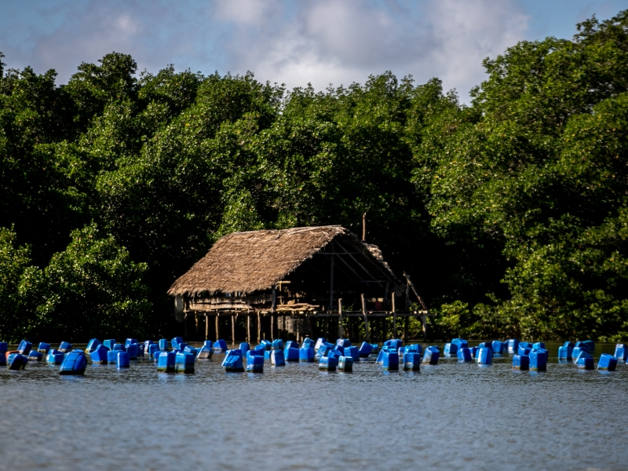
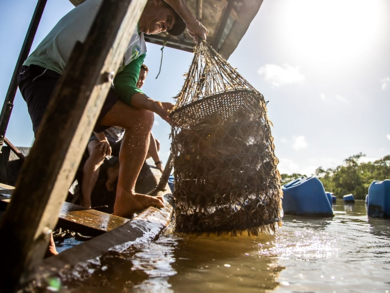
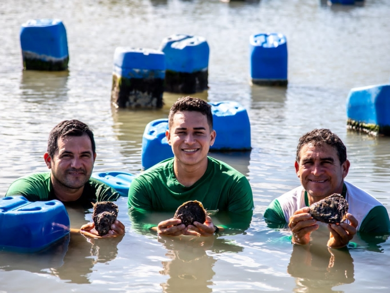
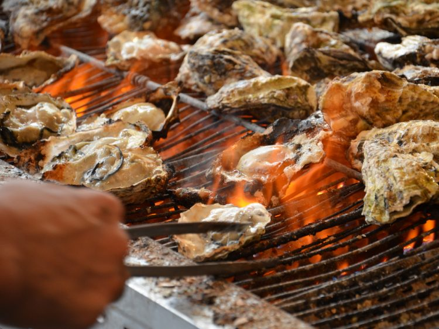
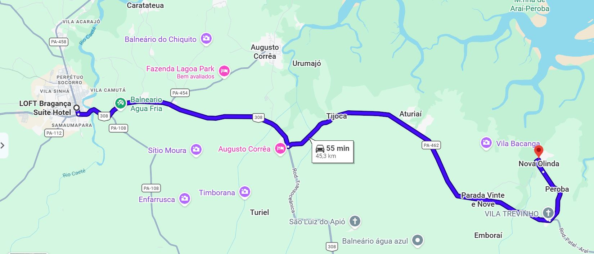
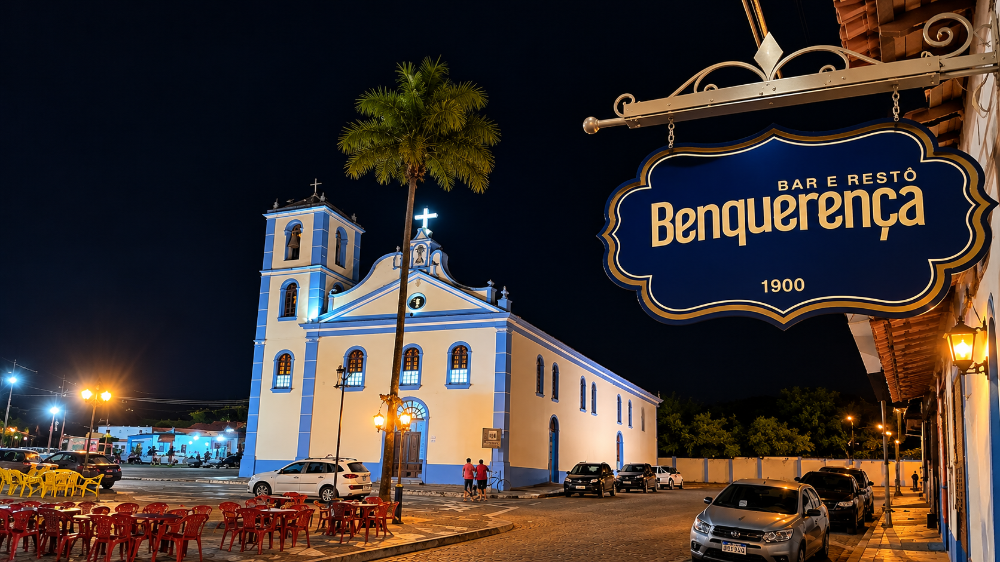
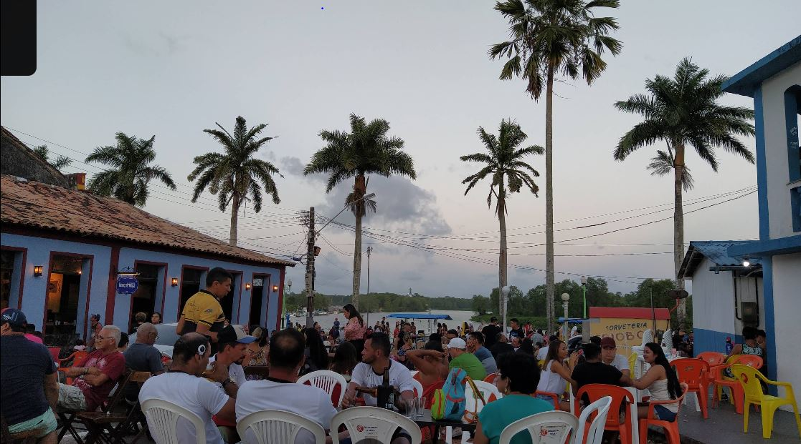
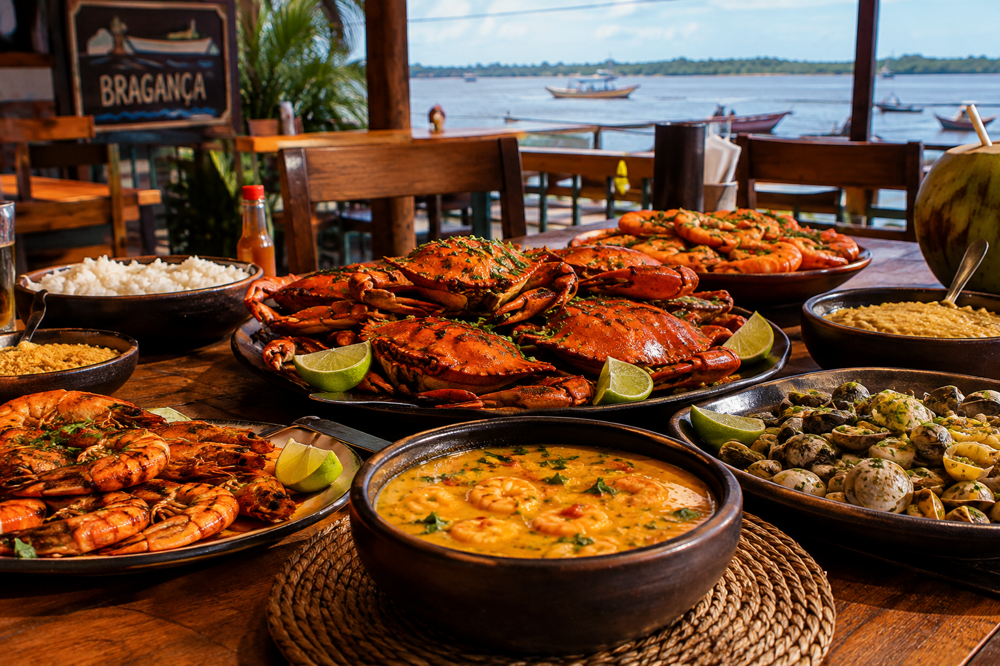
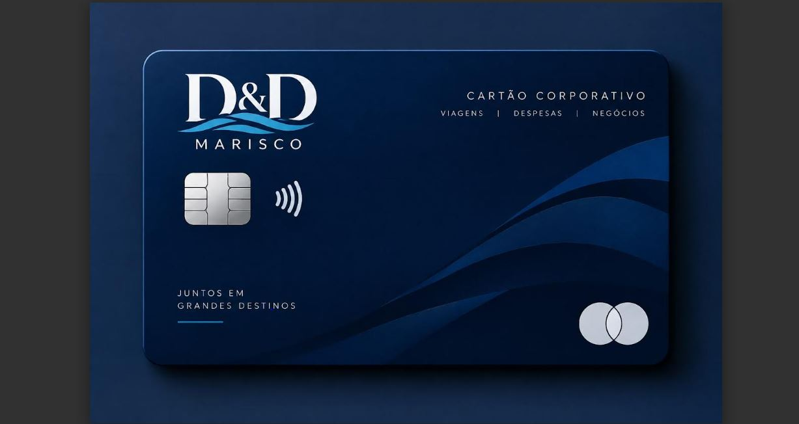

D&D MARISCO · VISITA TÉCNICA
EVENTOS TURISTICOS
Planejamento de turismo e deslocamento
DESTINO DA VISITA
BRAGANÇA PA
Período: 26 de novembro de 2026
01
EVENTO
INFORMAÇÕES DO EVENTO
EVENTO SELECIONADO
Associação dos Agricultores e Aquicultores de Nova Olinda – AGROMAR
Nova Olinda — PA
ENDEREÇO
Rua 13 de Maio, nº 240 - PARÁ
IDA
26/11 → 08h00 ás 09h00
VOLTA
26/11 → 11h00 ás 12h00
TEMPO
Em média 2 horas de visita





02
DESLOCAMENTO
INFORMAÇÕES DO EVENTO
RESTAURANTE
Orla de Bragança - RESTAURANTE BENQUERENÇA
Bragança - PA
ENDEREÇO
Av. Visc. do R. Branco, 1004 - PARÁ
IDA
26/11 → 12h00 ás 13h00
RETORNO AEROPORTO
26/11 → 13h00 ás 16h00
ALMOÇO
Em média: R$ 2.000,00



